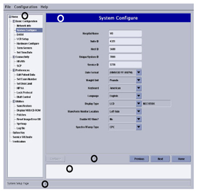
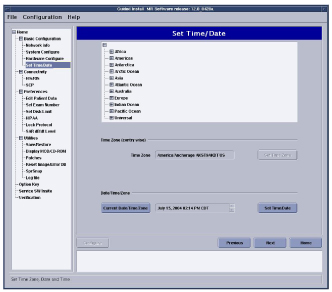
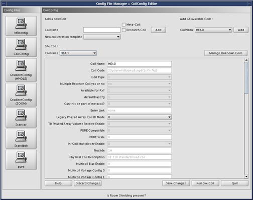

Operating Documentation
Direction 5440000, Rev# 5
Signa HDxt Service Methods
Module Version 1.0, Version Date 5/15/07
Operating Documentation |
| Required Persons | Preliminary Reqs | Procedure | Finalization |
|---|---|---|---|
| 1 | Not Applicable | Not Applicable | Not Applicable |
| Last Update | 09/09/2004 |
If this is a new/upgrade Signa Installation or if the system just needs to be reconfigured between software loads, do the following to start the Configuration GUI:
With the Signa up and running, go to the service desktop and push the [Install] button on the toolbar. A Cshell will open and ask for root password (“operator”<enter> is the default) The Install GUI will load and start
Help documentation is built into the GUI. Push the [Help] button on the tab you need information for in the GUI. Push the [Next] button to move through tabs in order. Modify entries to match your system as required. When satisfied, push the [Configure] button at the bottom of the tab page or wait until all tabs have been modified and go to the “Verification” tab. Review changes made and correct, then push the [Configure Tab(s)] button to update the system (see Illustration 1)
Illustration 1: Verification Menu-Configure Tabs

Before exiting the GUI, insert the SaveInfo MOD or new MOD into the drive. Go to the top left corner of the Instal GUI and select [File] and then [Save] and then [Save GI Configuration to MOD]. This process does not create a SaveInfo disk. It just creates a copy of the information already entered in the GUI tabs for use in the next software install.
Exit the install GUI by selecting [File] then [Quit]. If any error conditions still exists, you will be warned that no changes will be made before exiting.
| NOTE: | The GUI will not automatically reboot the system in configure mode. It will be up to the user after making configurations. |
If changes were made to the system configuration, select [System Shutdown] and reboot the system for changes to take effect
The Time/Date tab is the only tab that the Configure button will never be highlighted to set options. There are separate buttons for configuring this tab (see Illustration 2). If you need to reconfigure the Host time and or date at any time, do the following:
Select the time zone your system is located in, then push the [Set Time Zone] button
Select the date and local time, then push the [Set Time/Date] button
Illustration 2: Set Time/Date Menu

If unknown coils are found do the following:
Go to the config tab of the CSD and select coil config. Then select Manage Unknown Coils tab
Use Help to fix unknown coils. See Illustration 3
Illustration 3: Config File Manager

No finalization steps.